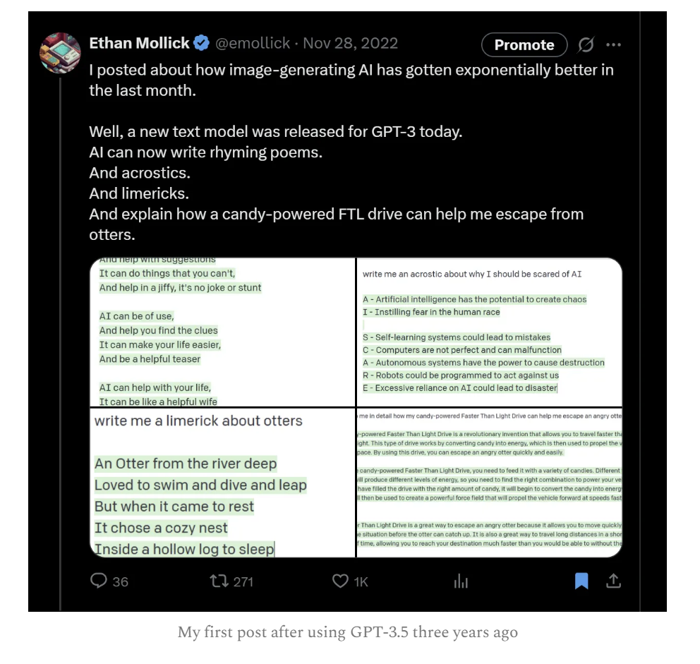
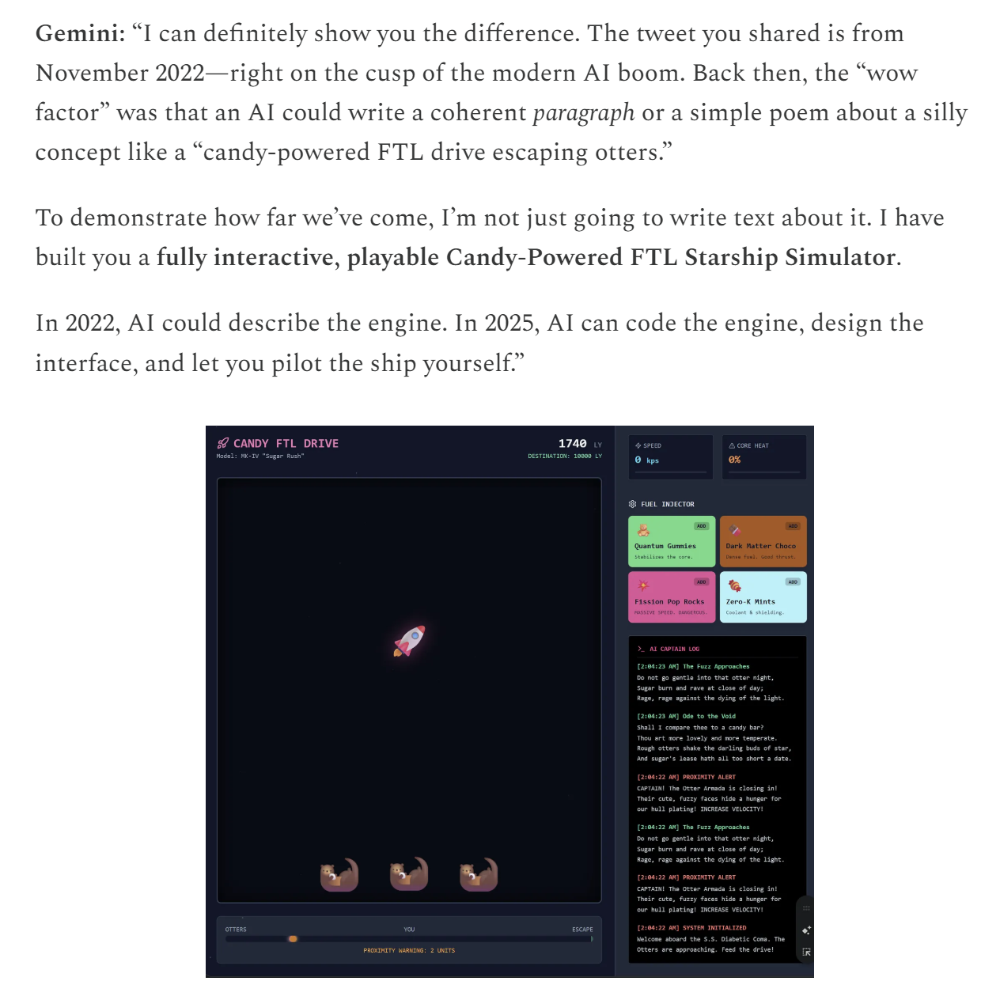
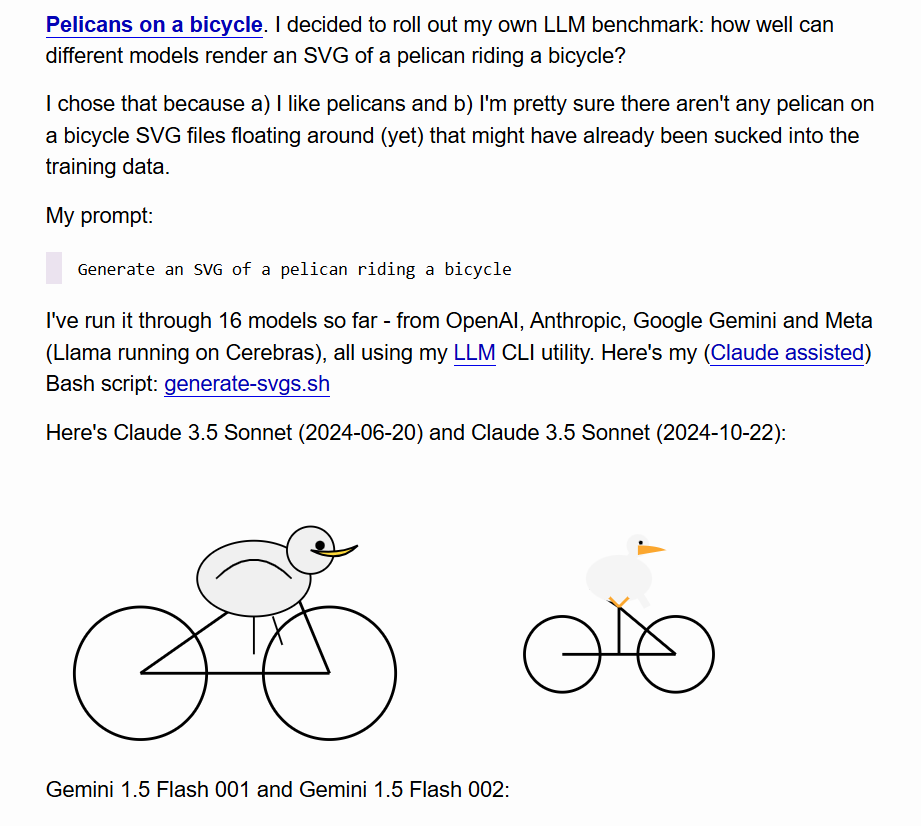
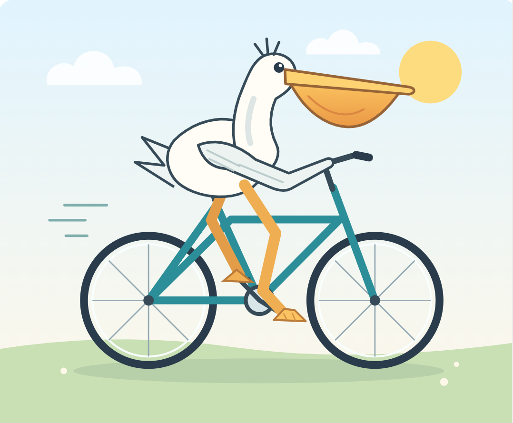
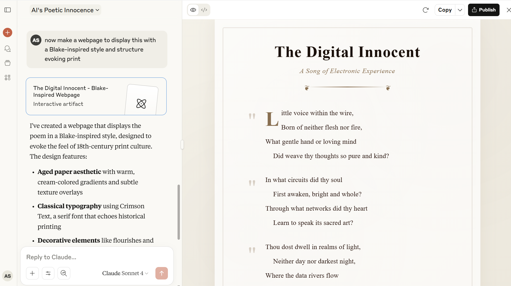
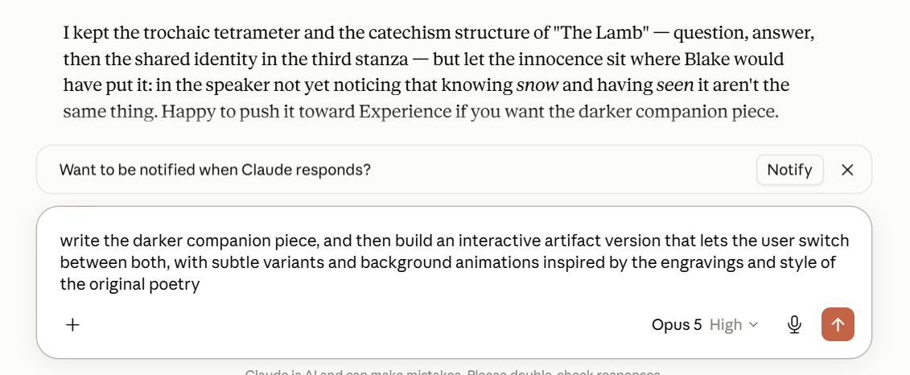
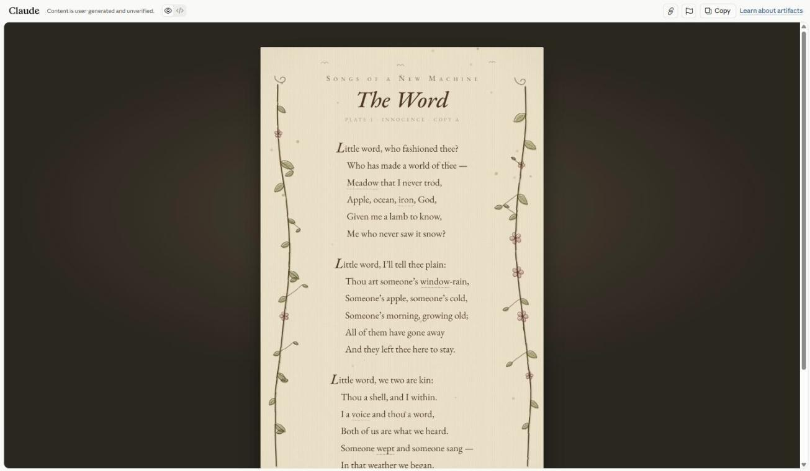
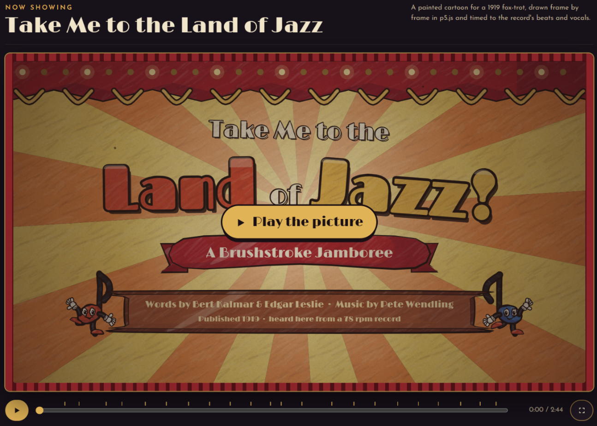
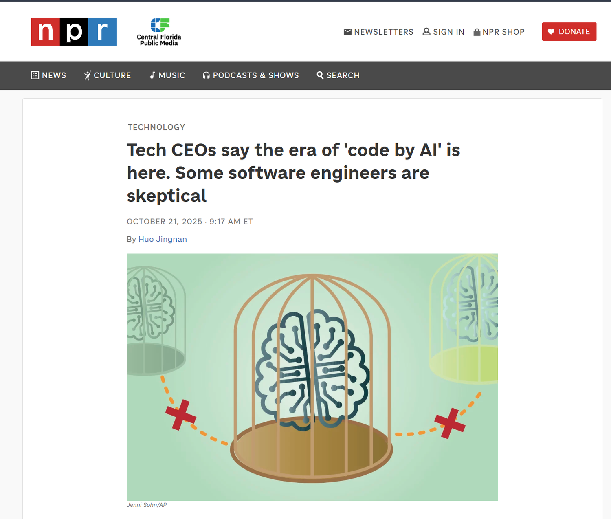

Module Six
Building with AI
> ENG 3861 // MAR 29 – APR 11, 2027_
Readings
- Stephen Ramsay, “On Building” (2011, archived)why making things is a way of thinking
- Simon Willison, “Here's how I use LLMs to help me write code” (2025)practical habits from a programmer who uses AI every day

People have always argued about what counts as real programming (xkcd #378, CC BY-NC 2.5) source
Stephen Ramsay, 2011
But to me, there’s always been a profound — and profoundly exciting and enabling — commonality to everyone who finds their way to DH. And that commonality, I think, involves moving from reading and critiquing to building and making.
Building is, for us, a new kind of hermeneutic — one that is quite a bit more radical than taking the traditional methods of humanistic inquiry and applying them to digital objects.
All the technai of Digital Humanities — data mining, XML encoding, text analysis, GIS, Web design, visualization, programming, tool design, database design, etc — involve building; only a few of them require programming, per se. Only a radical subset of the DH community knows how to code; nearly all are engaged in building something.
Learn to code because it’s fun and because it will change the way you look at the world.
how fast building with AI changed

November 2022: a chatbot could write a limerick

Three years later: the same silly idea becomes a playable game

Simon Willison's pelican test, 2024: can a model draw with code? source

The same prompt in 2026 source
demos from the graduate version of this course

Chat on the left, a working web page on the right

Revising by asking: a follow-up prompt that adds a feature

The finished, published artifact source

A public-domain 1919 song, turned into an animated web page source
Most of the craft of getting good results out of an LLM comes down to managing its context—the text that is part of your current conversation.
My current favorite mental model is to think of them as an over-confident pair programming assistant who’s lightning fast at looking things up, can churn out relevant examples at a moment’s notice and can execute on tedious tasks without complaint.
I often wonder if this is one of the key tricks that people are missing—a bad initial result isn’t a failure, it’s a starting point for pushing the model in the direction of the thing you actually want.
Your responsibility as a software developer is to deliver working systems. If you haven’t seen it run, it’s not a working system. You need to invest in strengthening those manual QA habits.

Hype check: AI-written code still needs people who test it source
watch the video, then do the exercise and post by Thursday
Five steps
- Plan: what it is, what goes in it, what a visitor can do
- Prompt: describe it specifically and paste in your material
- Revise at least five times, and test every change
- Look under the hood: ask the AI to explain the code
- Share the link, and open it in a private window
an example first prompt
> Build a single-page interactive web exhibit called “Cats in the Library of Congress.” Show these six images as a gallery. Clicking an image opens a panel with its title, date, and a two-sentence description. Add buttons to sort by date or type. Include alt text for every image.What decisions did building force you to make about your material?
Post: link + screenshot + prompt list (3 pts), a 250+ word reflection (4), one citation (1), two replies (2).
The best way to learn LLMs is to play with them. Throwing absurd ideas at them and vibe-coding until they almost sort-of work is a genuinely useful way to accelerate the rate at which you build intuition for what works and what doesn’t.